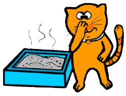
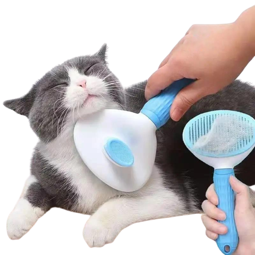

at litter is the magical substance that makes life easier for owners around the world. It’s not all that much to look at, but its powers are impressive. If you’ve always wondered what makes cat litter super-absorbent, you’ve come to the right place.
We’ve broken down the subject of cat litter for you, so, the next time you’re emptying your cat litter box, you’ll have a greater understanding of what you’re dealing with.What’s in Modern Day Cat Litter?
Lowe’s granulated clay solution remained unchanged for around 40 years, but cat litter became yet more effective — and cheaper — when Thomas Nelson noticed that bentonite clay forms clumps when wet.
This new “clumping cat litter” brought down the cost of pet care. Owners were able to simply remove the clumps instead of replacing the entire cat litter box.
The main component of most modern cat litters is still clay. However, mining bentonite clay is relatively expensive. Cheaper clays often contain added silica, which delivers the all-important clumping quality.
Clay, silica and the other materials used to make cat litter have natural odor-absorbing qualities, but as manufacturers continue to develop their products, new and more effective agents are being developed all the time. Find out more about the difference between clay cat litter and silica cat litter.
Carbon and baking soda both trap bad smells before they can develop, so they're used a lot in commercial cat litters.
Other natural odor-absorbents include cedar and pine, which are added to litter in the form of chippings. There are also added fragrance options that mask odors, but as we know, not all cats will tolerate the likes of lavender and vanilla in their toilet.

What is combs for pet
As a pet parent, you want to keep your kitty clean and looking good, right? Having the proper cat grooming tools on hand is essential to having a snazzy cat. Although cats are meticulous self-groomers and work hard to keep themselves clean, they need assistance from their humans to keep them in tip-top shape. "Grooming is about more than just keeping your cat looking good," explains VetBabble. "Grooming your cat on a regular basis will also help you to keep an eye on its health. And grooming your cat can even help to minimize feline health issues such as digestive problems caused by hairballs." Additionally, regular brushing removes dirt, dead hair, and dander, all of which contribute to unhealthy skin, and it prevents your cat from getting matted hair that's unmanageable, at which point you'd need the assistance of a professional groomer. Brushing also helps remove the loose hair in a controlled environment that you can easily dispose of, rather than finding stuck to furniture, clothes and other wanted areas. Because it's not a one-brush-suits-all situation, it can be tricky to know what you need and why. There are a lot of products from which to choose, so here's a handy guide to get you started on your quest for a well-groomed cat.
Here are the best cat brushes
- Best cat deshedding brush: Furminator Deshedding Tool
- Best cat brush for long hair: Safari Self-Cleaning Slicker Brush for Cats
- Best cat brush for short hair: Furbliss Pet Brush
- Best dematting comb for cats: Chris Christensen Cat/Carding Buttercomb #013
- Best cat grooming glove: HandsOn All-In-One Bathing and Grooming Gloves